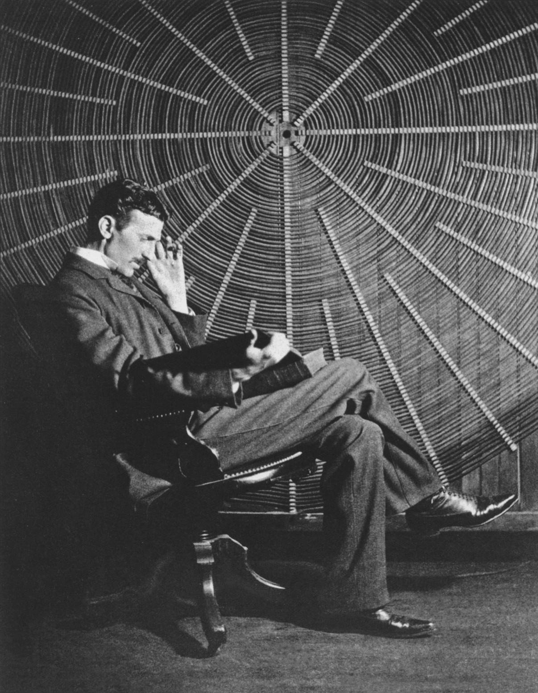

Nikola Tesla
The life of an extraordinary man



Serbian-American engineer and physicist Nikola Tesla (1856-1943) made dozens of breakthroughs in the production, transmission and application of electric power. He invented the first alternating current (AC) motor and developed AC generation and transmission technology.
- 1859 - Nikola Tesla is born
- Nikola Tesla is believed to have been born at midnight. During his birth, lightning struck during a summer storm. Born to a Serbian Family in Smiljan, Tesla was nicknamed `Child of the Storm`, by his aunt. That said, his mother replied to that comment by calling him `Child of the light`. He was born based on the conventional Slavonic rites, and his birth records show he was born on July 28th. Tesla was the fourth child in a family of five children. The family comprised
- 1870 - Tesla's Brush With Death
- Nikola Tesla moved to a place known as Karlovac to complete his high school. Three years later, he went back to Smiljan and shortly after his arrival; he contracted cholera. He was in hospital for close to one year, and he faced near-death circumstances.
- 1875 - Tesla Enrolls In College
- In 1875, Tesla enrolled to a Polytechnic based on a military scholarship. He was a disciplined student and achieved the highest grades possible while passing various exams. More so, he also started a cultural club and received a letter of commendation from the dean of the Technical Department. During his second year, he got into an argument with one his professors over the functionality of the Gramme dynamo.
- 1880 - Tesla Moves To Prague To Study Philosophy
- Tesla’s uncle collected money to help him relocate to Prague to finish his studies. He arrived late to enroll for classes, and his lack of competence in Greek and Czech meant that he did not qualify for the classes he wanted to take. Instead, he took up classes in Philosophy at the university, though he did not receive grades for the courses.
- 1881 - Tesla Begins His Career As Chief Electrical Engineer
- In 1881, he moved to Budapest in Hungary, to work for a telegraph company. Upon arriving, he noticed that the Budapest Telephone Exchange company was not in operation, so he worked at draftsman in another company. A few months later, the BTS Company was in operation, and he was given the position of chief electrical engineer. During his tenure, he introduced various operation upswings which improved the performance of the company.
- 1882 - Tesla Goes To Work For Edison
- In 1882, he found another job in Paris with a company referred to as the Continental Edison Company. He began working in a new industry by installing indoor lighting resources. His company had several divisions, and he worked in the section of the company that was responsible for lighting systems. At this company, he improved his electrical engineering prowess.
- 1885 - Tesla Submits Some Of His First Patents
- Nikola Tesla moved to a place known as Karlovac to complete his high school. Three years later, he went back to Smiljan and shortly after his arrival; he contracted cholera. He was in hospital for close to one year, and he faced near-death circumstances.
- 1887 - Tesla Re-imagines The Electric Motor
- In 1887, Tesla came up with an induction motor that was operated by alternating current, a form of power that was becoming common in Europe and the USA. This type of power provided various benefits, especially in long-distance power transmission. In particular, the motor was operated by a polyphase current, which produced a rotating magnetic field to operate the motor.
- 1890 - Tesla Begins His Work On Wireless Power Transmission
- After 1890, Tesla researched various approaches to transmitting power by inductive and capacitive coupling. This was through the use of AC voltages that were produced by his famous `Tesla coil.` He tried in many ways to come up with a wireless lighting system that was based on near field and capacitative coupling. He even performed various public demonstrations, where he would light up Geissler tubes to impress his audience. Tesla also spent close to well over a decade trying to come up with new solutions for lighting.
- 1891 - Tesla Patents The Tesla Coil
- In mid 1891, at the age of 35, he became a naturalized citizen of the US. In the same year, he also patented his famous Tesla Coil.
- 1943 - Tesla's Death
- In early 1943, at age 86, Tesla died in a Hotel Room in New York. He died alone, and his body was found by a maid who ignored a do not disturb sign on Tesla’s room. The assistant medical professional evaluated the body and determined the cause of death was related to coronary complications. A few days after the FBI ordered for the acquisition of his belongings, John G Trump was called in to evaluate his works.
Discover more interesting stories of this extraordinary man on his wikipedia entry.